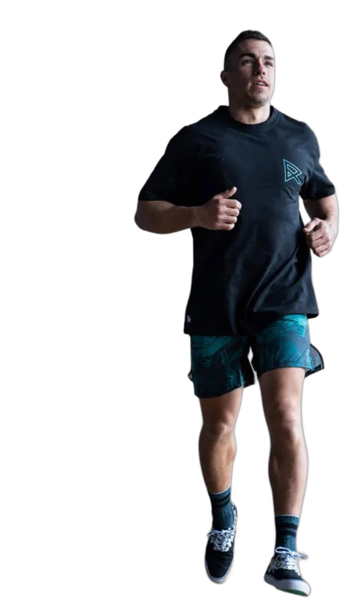
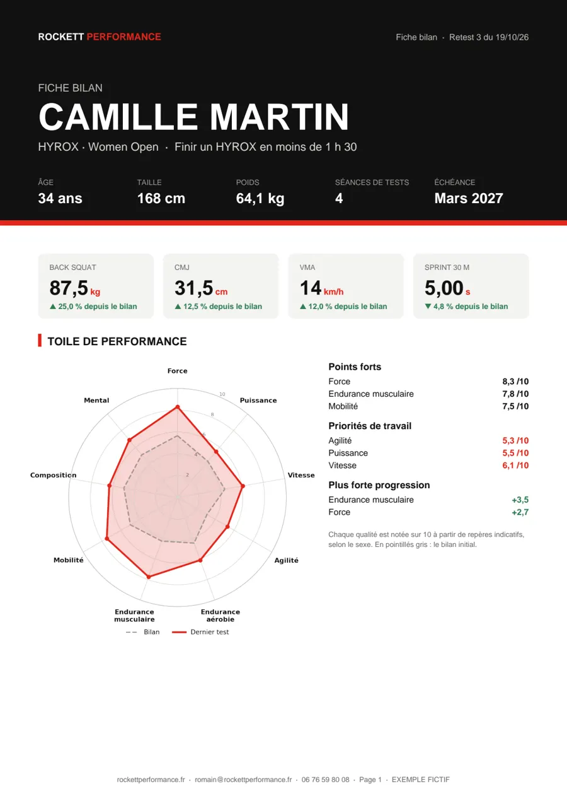
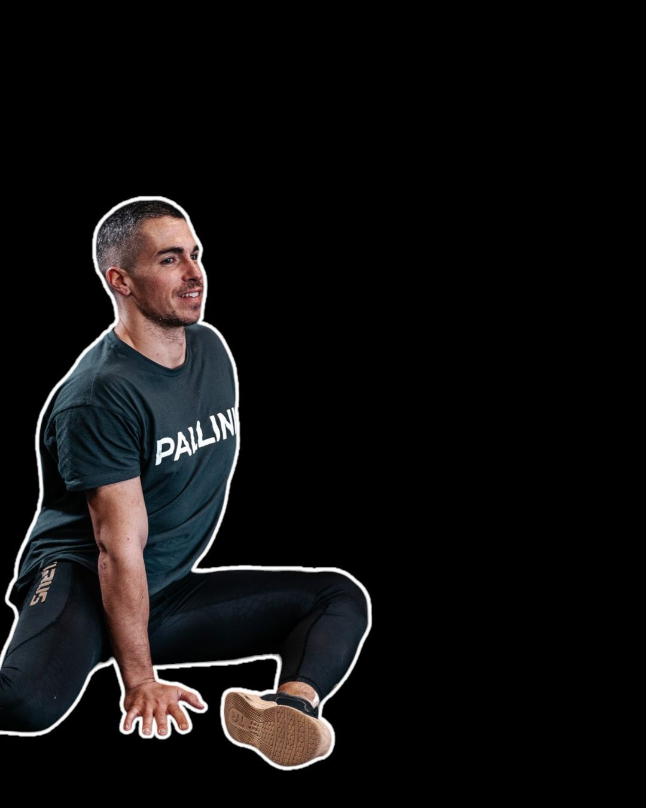
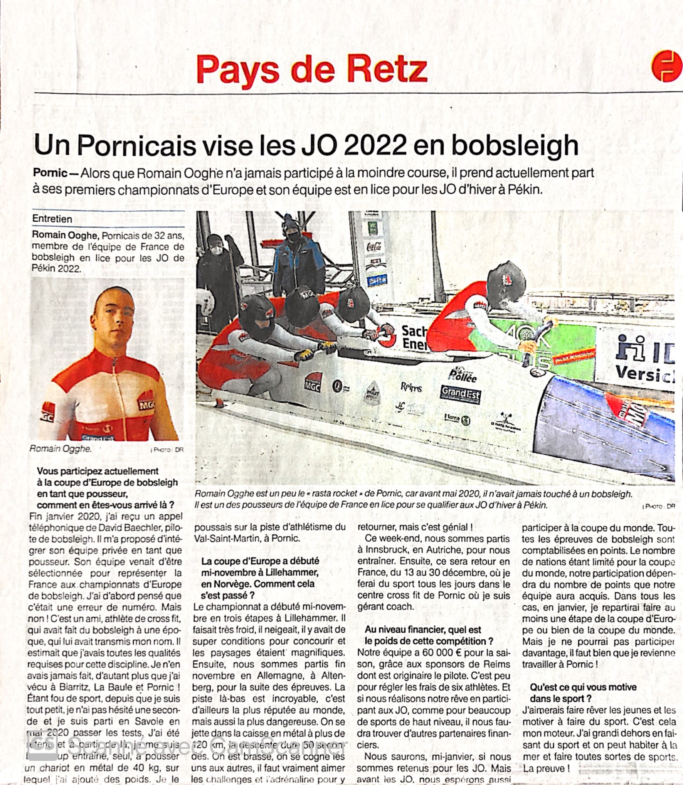
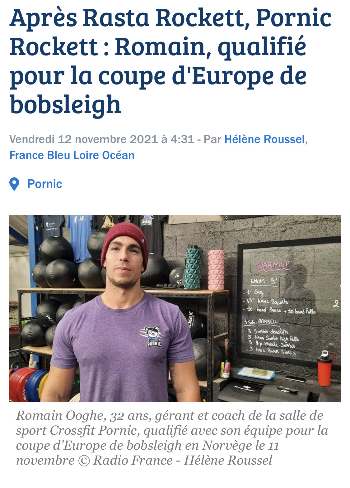

Coach sportif et préparateur physique à Pornic
Mesurer.Programmer.Progresser.

La performance, construite sur la science.
Coach sportif privé et préparateur physique à Pornic et dans le Pays de Retz. Un coaching individuel ancré dans l'expérience du sport de haut niveau. Tests complets, programmation sur-mesure, progression mesurée à chaque étape.
- 5Diplômes, STAPS + 4 DU
- 3Sports de haut niveau
- 100 %Sur-mesure
- 360°Physique, nutrition, mental
C'est pour vous si…
Sportif amateur ou compétiteur, la méthode est la même : on mesure d'abord, on programme ensuite.
-
Vous reprenez le sport
Après une pause, sans savoir par où commencer. Le bilan dit précisément où vous en êtes, et le programme repart de là, sans vous blesser.
-
Vous préparez une échéance
Compétition, HYROX, concours pompier ou armée : une périodisation complète jusqu'à la date, avec des retests pour vérifier que vous arrivez prêt.
-
Vous revenez de blessure
Réathlétisation encadrée : screening de mobilité, charge progressive et protocole correctif pour revenir plus solide qu'avant.
-
Vous voulez franchir un cap
Vous vous entraînez déjà, mais vous stagnez. Les tests révèlent la lacune qui vous freine, et elle devient la priorité du programme.
Un coaching structuré, pas improvisé
Chaque parcours commence par une analyse complète et se construit autour de données réelles — pas d'intuitions.
-
Bilan complet
Les tests qui comptent pour votre objectif, répartis sur deux séances pour que chaque mesure soit fiable : force, endurance, vitesse, mobilité, composition corporelle et profil mental.
-
Plan sur-mesure
Une programmation spécifique construite autour de vos objectifs et des résultats aux tests. Chaque séance a une raison d'être.
-
Tests réguliers
La progression est mesurée, documentée, visible. Pas de doutes sur l'avancement — les chiffres parlent d'eux-mêmes.
-
Adaptabilité
Le programme évolue en continu selon votre vie, votre corps et vos retours. Ajustements possibles à tout moment.
Du concret, pas des promesses
Après chaque bilan, vous recevez un document clair sur votre niveau, vos priorités et votre progression. Voici deux exemples.

Après chaque bilan La fiche bilan Votre toile de performance, vos points forts, vos priorités et l’évolution de chaque test, séance après séance. Voir l’exemple (PDF) → Athlètes et compétiteurs
Le rapport de performance
L’analyse complète : force, profil force-vitesse, courbe de puissance, réactivité, capacités énergétiques. Ici, les vrais tests de Romain en bobsleigh, Coupe d’Europe et Coupe du monde.
Voir l’exemple (PDF) →
Athlètes et compétiteurs
Le rapport de performance
L’analyse complète : force, profil force-vitesse, courbe de puissance, réactivité, capacités énergétiques. Ici, les vrais tests de Romain en bobsleigh, Coupe d’Europe et Coupe du monde.
Voir l’exemple (PDF) →

Votre coach
Romain Ooghe
Avant d'entraîner les autres, j'ai passé des années à chercher mes propres limites.
Football américain au Pôle France d'Amiens puis avec les London Blitz, bobsleigh en Coupe d'Europe et en Coupe du monde comme pousseur, au sein d'une équipe privée représentant la France, qui visait les JO de Pékin 2022, puis quatre ans à la tête de CrossFit Pornic : l'exigence du haut niveau, je l'ai vécue de l'intérieur.
Aujourd'hui coach sportif à Pornic, je mets cette expérience et ma formation universitaire (STAPS et 4 diplômes universitaires) au service des sportifs de tous niveaux, à Pornic Hybrid Training. Ma règle est simple : rien n'est programmé sans avoir été mesuré.
Science & terrain. Les deux.
Une formation universitaire de haut niveau et un vécu de sportif professionnel — une combinaison rare dans le monde du coaching.
Formation
Licence STAPS
Sciences et Techniques des Activités Physiques et Sportives
DU Préparation physique & réathlétisation
Planification, prévention et retour à la performance après blessure
DU Nutrition & micro-nutrition du sportif
Optimisation des apports pour la performance et la récupération
DU Ingénierie de la Haute Performance Sportive
Méthodologie et planification de l'entraînement à haut niveau
DU Préparation mentale
Gestion du stress, confiance, focus et routines de performance. Prof à l'EDNH Nantes.
Parcours athlétique
-
Football américain
Pôle France d'Amiens & London Blitz
Sélectionné au Pôle France d'Amiens puis évolution vers le championnat d'Europe avec les London Blitz. Exigences physiques et tactiques au plus haut niveau national et européen.
-
Bobsleigh
Représentant de la France
Pousseur en Coupe d'Europe et en Coupe du monde, au sein d'une équipe privée représentant la France, en lice pour les JO de Pékin 2022. Démarrage explosif, puissance maximale en accélération et coordination à la milliseconde.
-
CrossFit
Gérant CrossFit Pornic, 2019–2023
Direction, programmation et coaching d'une box CrossFit pendant 4 ans. Entraînement fonctionnel, gestion d'athlètes de tous niveaux, culture de la performance.
Un Pornicais sur la glace
De la piste d'athlétisme du Val-Saint-Martin à la Coupe d'Europe de bobsleigh : un parcours suivi par les médias locaux en 2021.
« Après Rasta Rockett, Pornic Rockett » France Bleu Loire Océan, novembre 2021, au sujet de la qualification de Romain en Coupe d'Europe de bobsleigh.


Un suivi, une exigence
Que vous soyez sportif amateur ou compétiteur, la rigueur de la méthode reste identique. Tout commence par un bilan de performance.
- Deux séances d'1 h : des tests sélectionnés selon votre objectif, sans fatigue qui fausse les résultats
- Profil mental : questionnaire validé à remplir en ligne avant la première séance
- Rapport personnalisé : radar de performance et orientations de programmation
- Prise en charge complète dès l'arrivée, à Pornic Hybrid Training
- La 2e séance devient votre 1re séance de suivi si vous vous engagez. Bilan seul : 120 € les deux séances
Les suivis
Suivi Essentiel
Une séance encadrée par semaine, et un programme précis pour vos séances en autonomie.
- 1 séance coachée par semaine
- Programme sur‑mesure pour vos séances en autonomie
- Retests toutes les 6 à 8 semaines
- Ajustements selon vos résultats
Suivi Performance
L'accompagnement complet, pour progresser vite et sans approximation.
- 2 séances coachées par semaine
- Programme sur‑mesure pour vos séances en autonomie
- Retests toutes les 6 à 8 semaines
- Suivi par messages entre les séances
- Conseils nutrition et préparation mentale
Préparation spécifique
Compétition, HYROX, concours pompier ou armée, retour après blessure.
- Bilan de performance inclus
- 12 séances coachées
- Périodisation complète jusqu'à l'échéance
- Retests et protocole de réathlétisation si besoin
- Séance à l'unité1 h de coaching sur‑mesure60 €
- Duo1 séance à deux, soit 40 € par personne80 €
Séances à Pornic Hybrid Training, 1 rue du Chaudron. Accès à la salle inclus : aucun abonnement ni droit d'entrée à prévoir. À domicile uniquement si le matériel disponible est suffisant.
Suivis mensuels : engagement minimum de 3 mois.
Questions fréquentes
Faut‑il un abonnement à la salle ?
Non. L'accès à Pornic Hybrid Training est inclus dans tous les suivis, sans abonnement ni droit d'entrée.
Peut‑on s'entraîner à domicile ?
Uniquement si le matériel disponible est suffisant : barres, charges, ergomètre. Sinon, les séances ont lieu à la salle.
Le bilan est‑il obligatoire ?
Oui. Tout accompagnement commence par le bilan : c'est la seule façon sérieuse de programmer. Il se fait en deux séances d'1 h : la première à 60 €, la seconde incluse dans votre suivi si vous poursuivez (120 € au total pour un bilan seul).
Y a‑t‑il un engagement ?
Les suivis mensuels demandent un engagement minimum de 3 mois. La préparation spécifique est un bloc de 12 semaines.
Prêt à vous entraîner autrement ?
Tout commence par le bilan. On analyse votre niveau, vos objectifs, et on construit la suite ensemble.
Réserver mon bilan